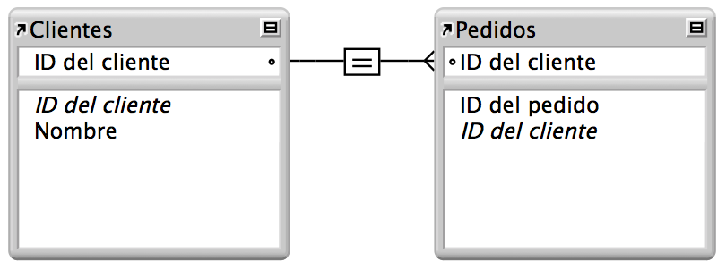

Bases de Datos Relacionales
3. Ejemplo Base de Datos Relacional
Contenido
En la imagen se puede apreciar que la tabla Cliente que es la tabla padre y que esta contiene la clave primaria con el código único del cliente, el registro del cliente solo aparece una vez, mientras que en la tabla hija Pedidos se contiene esa misma clave (haciendo referencia) pero que en este caso es una clave secundaria o conocida también como clave foránea.
Es importante tomar en cuenta algunos aspectos a la hora de diseñar una base de datos relacional, por ejemplo, no pueden existir dos tablas con el mismo nombre y la relación entre una tabla padre y una tabla hija se lleva a cabo a través de claves primarias (son la clave principal de un registro dentro de una tabla) y claves ajenas (se colocan en la tabla hija y contienen el mismo valor que la clave primaria del registro padre).
Como en la mayoría de modelos habrá ventajas y desventajas, lo más importante es identificar en qué casos es factible y funcional cada modelo, a la hora de aplicar una base de datos relacional tener en cuenta, pero, cómo vamos a ver, en este caso las ventajas son lo suficientemente importantes como para que sea una de las bases de datos más empleada, incluso contando con algunas deficiencias.
Obra publicada con Licencia Creative Commons Reconocimiento Compartir igual 4.0